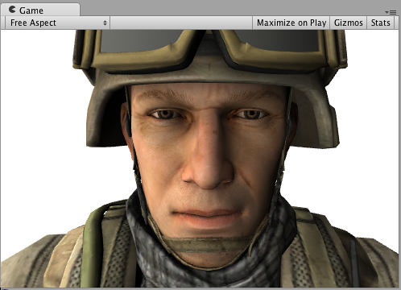
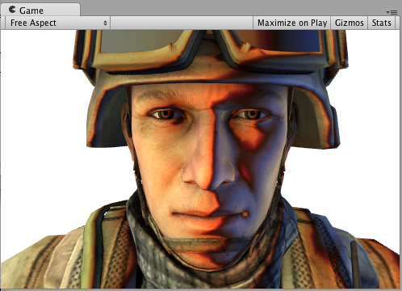
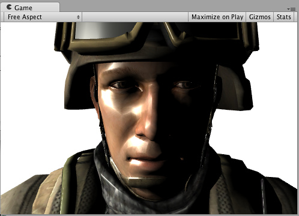

Surface Shader Lighting Examples
Here are some examples of custom lighting models in Surface Shaders. General Surface Shader examples are in this page.
Because Deferred Lighting does not play well with some custom per-material lighting models, in most examples below we make the shaders compile to Forward Rendering only.
Diffuse
We'll start with a shader that uses built-in Lambert lighting model:
Shader "Example/Diffuse Texture" {
Properties {
_MainTex ("Texture", 2D) = "white" {}
}
SubShader {
Tags { "RenderType" = "Opaque" }
CGPROGRAM
#pragma surface surf Lambert
struct Input {
float2 uv_MainTex;
};
sampler2D _MainTex;
void surf (Input IN, inout SurfaceOutput o) {
o.Albedo = tex2D (_MainTex, IN.uv_MainTex).rgb;
}
ENDCG
}
Fallback "Diffuse"
}
Here's how it looks like with a texture and without an actual texture (one directional light is in the scene): 

Now, let's do exactly the same, but write out our own lighting model instead of using built-in Lambert one. Surface Shader Lighting Models are just some functions that we need to write. Here's a simple Lambert one. Note that the "shader part" itself did not change at all (grayed out):
Shader "Example/Diffuse Texture" { Properties { _MainTex ("Texture", 2D) = "white" {} } SubShader { Tags { "RenderType" = "Opaque" } CGPROGRAM #pragma surface surf SimpleLambert half4 LightingSimpleLambert (SurfaceOutput s, half3 lightDir, half atten) { half NdotL = dot (s.Normal, lightDir); half4 c; c.rgb = s.Albedo * _LightColor0.rgb * (NdotL * atten * 2); c.a = s.Alpha; return c; } struct Input { float2 uv_MainTex; }; sampler2D _MainTex; void surf (Input IN, inout SurfaceOutput o) { o.Albedo = tex2D (_MainTex, IN.uv_MainTex).rgb; } ENDCG } Fallback "Diffuse" }
So our simple Diffuse lighting model is LightingSimpleLambert function. It computes lighting by doing a dot product between surface normal and light direction, and then applies light attenuation and color.
Diffuse Wrap
Here's Wrapped Diffuse - a modification of Diffuse lighting, where illumination "wraps around" the edges of objects. It's useful for faking subsurface scattering effect. Again, the surface shader itself did not change at all, we're just using different lighting function.
Shader "Example/Diffuse Wrapped" { Properties { _MainTex ("Texture", 2D) = "white" {} } SubShader { Tags { "RenderType" = "Opaque" } CGPROGRAM #pragma surface surf WrapLambert half4 LightingWrapLambert (SurfaceOutput s, half3 lightDir, half atten) { half NdotL = dot (s.Normal, lightDir); half diff = NdotL * 0.5 + 0.5; half4 c; c.rgb = s.Albedo * _LightColor0.rgb * (diff * atten * 2); c.a = s.Alpha; return c; } struct Input { float2 uv_MainTex; }; sampler2D _MainTex; void surf (Input IN, inout SurfaceOutput o) { o.Albedo = tex2D (_MainTex, IN.uv_MainTex).rgb; } ENDCG } Fallback "Diffuse" }
 
Toon Ramp
Here's a "Ramp" lighting model that uses a texture ramp to define how surface responds to angle between light and the normal. This can be used for variety of effects, including Toon lighting.
Shader "Example/Toon Ramp" { Properties { _MainTex ("Texture", 2D) = "white" {} _Ramp ("Shading Ramp", 2D) = "gray" {} } SubShader { Tags { "RenderType" = "Opaque" } CGPROGRAM #pragma surface surf Ramp sampler2D _Ramp; half4 LightingRamp (SurfaceOutput s, half3 lightDir, half atten) { half NdotL = dot (s.Normal, lightDir); half diff = NdotL * 0.5 + 0.5; half3 ramp = tex2D (_Ramp, float2(diff)).rgb; half4 c; c.rgb = s.Albedo * _LightColor0.rgb * ramp * (atten * 2); c.a = s.Alpha; return c; } struct Input { float2 uv_MainTex; }; sampler2D _MainTex; void surf (Input IN, inout SurfaceOutput o) { o.Albedo = tex2D (_MainTex, IN.uv_MainTex).rgb; } ENDCG } Fallback "Diffuse" }
 

Simple Specular
Here's a simple specular lighting model. It's quite simple to what built-in BlinnPhong actually does; we just put it here to illustrate how it's done.
Shader "Example/Simple Specular" { Properties { _MainTex ("Texture", 2D) = "white" {} } SubShader { Tags { "RenderType" = "Opaque" } CGPROGRAM #pragma surface surf SimpleSpecular half4 LightingSimpleSpecular (SurfaceOutput s, half3 lightDir, half3 viewDir, half atten) { half3 h = normalize (lightDir + viewDir); half diff = max (0, dot (s.Normal, lightDir)); float nh = max (0, dot (s.Normal, h)); float spec = pow (nh, 48.0); half4 c; c.rgb = (s.Albedo * _LightColor0.rgb * diff + _LightColor0.rgb * spec) * (atten * 2); c.a = s.Alpha; return c; } struct Input { float2 uv_MainTex; }; sampler2D _MainTex; void surf (Input IN, inout SurfaceOutput o) { o.Albedo = tex2D (_MainTex, IN.uv_MainTex).rgb; } ENDCG } Fallback "Diffuse" }
 
Decoding Lightmaps
We'll start with a shader that mimics built-in lightmap decoding and uses Unity built-in function DecodeLightmap to decode information from data stored in lightmap textures and built-in UNITY_DIRBASIS macro defining basis vectors for Directional lightmaps:
Shader "Example/Standard Lightmap Decoding" { Properties { _MainTex ("Texture", 2D) = "white" {} } SubShader { Tags { "RenderType" = "Opaque" } CGPROGRAM #pragma surface surf Standard half4 LightingStandard (SurfaceOutput s, half3 lightDir, half atten) { half NdotL = dot (s.Normal, lightDir); half4 c; c.rgb = s.Albedo * _LightColor0.rgb * (NdotL * atten * 2); c.a = s.Alpha; return c; } inline fixed4 LightingStandard_SingleLightmap (SurfaceOutput s, fixed4 color) { half3 lm = DecodeLightmap (color); return fixed4(lm, 0); } inline fixed4 LightingStandard_DualLightmap (SurfaceOutput s, fixed4 totalColor, fixed4 indirectOnlyColor, half indirectFade) { half3 lm = lerp (DecodeLightmap (indirectOnlyColor), DecodeLightmap (totalColor), indirectFade); return fixed4(lm, 0); } inline fixed4 LightingStandard_StandardLightmap (SurfaceOutput s, fixed4 color, fixed4 scale, bool surfFuncWritesNormal) { UNITY_DIRBASIS half3 lm = DecodeLightmap (color); half3 scalePerBasisVector = DecodeLightmap (scale); if (surfFuncWritesNormal) { half3 normalInRnmBasis = saturate (mul (unity_DirBasis, s.Normal)); lm *= dot (normalInRnmBasis, scalePerBasisVector); } return fixed4(lm, 0); } struct Input { float2 uv_MainTex; }; sampler2D _MainTex; void surf (Input IN, inout SurfaceOutput o) { o.Albedo = tex2D (_MainTex, IN.uv_MainTex).rgb; } ENDCG } Fallback "Diffuse" }
Now, let's add some tone mapping for light stored in lightmaps:
Shader "Example/Tonemapped Lightmap Decoding" { Properties { _MainTex ("Texture", 2D) = "white" {} _Gain ("Lightmap tone-mapping Gain", Float) = 1 _Knee ("Lightmap tone-mapping Knee", Float) = 0.5 _Compress ("Lightmap tone-mapping Compress", Float) = 0.33 } SubShader { Tags { "RenderType" = "Opaque" } CGPROGRAM #pragma surface surf Tonemapped half4 LightingTonemapped (SurfaceOutput s, half3 lightDir, half atten) { half NdotL = dot (s.Normal, lightDir); half4 c; c.rgb = s.Albedo * _LightColor0.rgb * (NdotL * atten * 2); c.a = s.Alpha; return c; } half _Gain; half _Knee; half _Compress; inline half3 TonemapLight (half3 i) { i *= _Gain; return (i > _Knee)? (((i - _Knee)*_Compress)+_Knee): i; } inline fixed4 LightingTonemapped_SingleLightmap (SurfaceOutput s, fixed4 color) { half3 lm = TonemapLight(DecodeLightmap (color)); return fixed4(lm, 0); } inline fixed4 LightingTonemapped_DualLightmap (SurfaceOutput s, fixed4 totalColor, fixed4 indirectOnlyColor, half indirectFade) { half3 lm = TonemapLight(lerp (DecodeLightmap (indirectOnlyColor), DecodeLightmap (totalColor), indirectFade)); return fixed4(lm, 0); } inline fixed4 LightingTonemapped_StandardLightmap (SurfaceOutput s, fixed4 color, fixed4 scale, bool surfFuncWritesNormal) { UNITY_DIRBASIS half3 lm = TonemapLight(DecodeLightmap (color)); half3 scalePerBasisVector = DecodeLightmap (scale); if (surfFuncWritesNormal) { half3 normalInRnmBasis = saturate (mul (unity_DirBasis, s.Normal)); lm *= dot (normalInRnmBasis, scalePerBasisVector); } return fixed4(lm, 0); } struct Input { float2 uv_MainTex; }; sampler2D _MainTex; void surf (Input IN, inout SurfaceOutput o) { o.Albedo = tex2D (_MainTex, IN.uv_MainTex).rgb; } ENDCG } Fallback "Diffuse" }
Page last updated: 2013-01-04